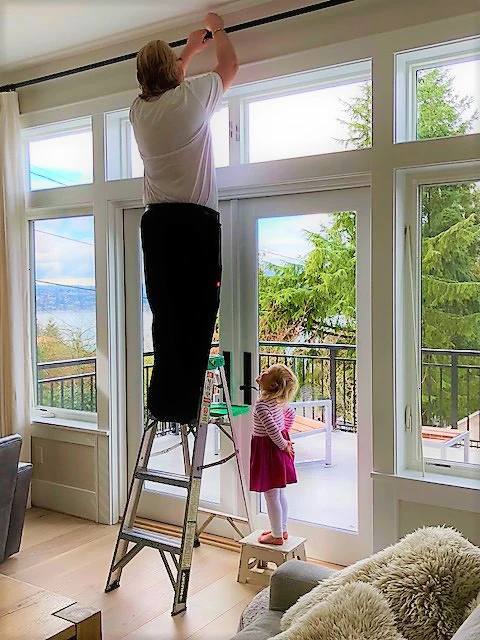

Blind installation in Seattle
For a row of windows, each blind affects how the whole wall looks. Steve Hewitt installs designer-specified blinds throughout Greater Seattle, with attention to headrail alignment and clearance for handles and controls.
Installing window coverings since 1997. Wholesale to the trade only.

Details to discuss before installation
Inside or outside mounting
Let Steve know whether the blinds are specified to sit within the opening or extend beyond it. Include the product's mounting requirements and photos showing the frame and trim. Window depth, handles and nearby obstructions are useful details for reviewing the proposed mounting position.
Alignment across multiple openings
For a bank of windows, provide an opening schedule or a clearly labeled list of treatments. Note where the design calls for matching heights or alignment with adjoining coverings. Identifying each blind and its intended opening helps make the installation plan clear.
Controls and surrounding treatments
Describe the specified control arrangement and any curtains, draperies or other coverings that share the opening. Include the product instructions with the project details, especially when a control needs clear access or a particular mounting arrangement. For powered treatments, confirm the system and required coordination with Steve before scheduling.
Preparing a trade inquiry
For a useful first discussion, send the manufacturer and model, number of blinds, project location in the Seattle metropolitan area and preferred timing. Photos should show the full window opening and its surrounding trim. Mention installation height, access limitations and any existing treatments that affect the work.
If your project includes fabric window coverings too, Steve can discuss the overall installation scope. Read about drapery and curtain installation or Roman and roller shade installation for the details relevant to those treatments.
Project questions
Is this a retail blind store?
The service described here is installation for architects and interior designers. Steve works with trade clients on designer-specified window coverings. For product selection or purchasing, work with your designer or supplier.
Can you quote from a window count alone?
Send the count along with the product specifications, photos and access details. These give Steve more context for discussing the installation and pricing than the number of windows by itself.
What about an existing blind that needs repair?
Describe the product and the issue when you contact Steve so he can confirm whether it falls within his scope. This page describes installation; repair availability and replacement parts need a separate discussion.
Discuss a Seattle project
Contact Steve about your blind installation, availability or pricing in the Greater Seattle area. Wholesale to the trade only please.